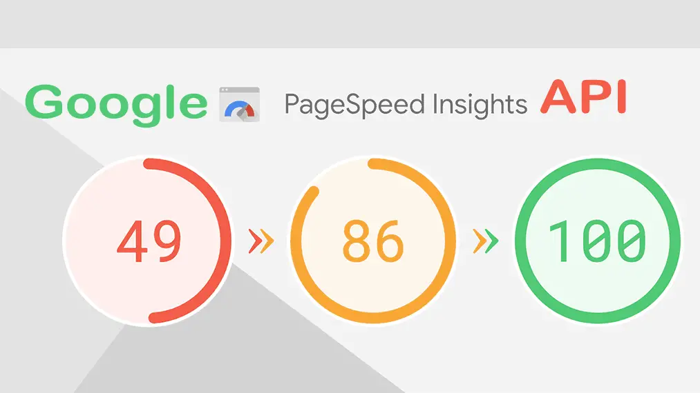
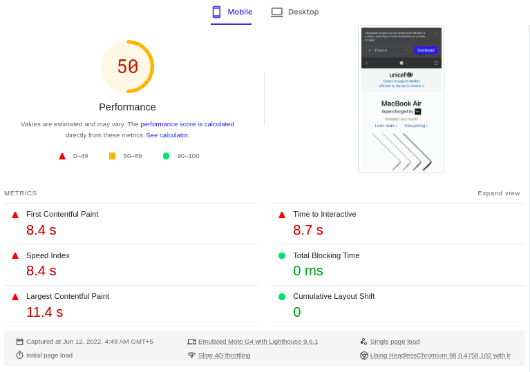

Overview
Monitoring Performance with the PageSpeed Insights API involves using Google's PageSpeed Insights API to assess and optimize the performance of web pages. The API allows developers to programmatically analyze a webpage's speed and receive recommendations for improvement. Here is a summary of key points:
PageSpeed Insights API Overview: The PageSpeed Insights API is a tool provided by Google to assess the performance of web pages in terms of speed and user experience.
Programmatic Analysis: Developers can use the API to programmatically analyze web pages and receive detailed reports on their performance.
Key Metrics: The API provides insights into key performance metrics, such as page load time, First Contentful Paint (FCP), and Cumulative Layout Shift (CLS).
Recommendations for Improvement: Along with performance metrics, the API offers recommendations for optimizing web pages. These suggestions can include minimizing render-blocking resources, optimizing images, and leveraging browser caching.
Integration with Development Workflow: Developers can integrate the PageSpeed Insights API into their development workflow, allowing for continuous monitoring and improvement of webpage performance.

Automation and Alerts: Automation can be implemented to regularly check the performance of web pages using the API. Alerts can be set up to notify developers of performance issues that need attention.
Mobile and Desktop Insights: The API provides separate insights for both mobile and desktop versions of a webpage, considering the differences in user experience on different devices.
Access to Historical Data: Developers can access historical performance data through the API, enabling the tracking of performance changes over time.
Authentication and Quotas: To use the PageSpeed Insights API, developers need to authenticate their requests. Google also imposes quotas to prevent abuse and ensure fair usage.
Implementation in SEO and User Experience Strategies: Integrating PageSpeed Insights API results can contribute to SEO strategies by improving page rankings and enhancing user experience, as website speed is a crucial factor in both.
Summary
Leveraging the PageSpeed Insights API allows developers to gain valuable insights into webpage performance, receive actionable recommendations, and integrate performance monitoring into their development processes for ongoing optimization.
PageSpeed Insights (PSI) reports on the user experience of a page on both mobile and desktop devices, and provides suggestions on how that page may be improved.
PSI provides both lab and field data about a page. Lab data is useful for debugging issues, as it is collected in a controlled environment. However, it may not capture real-world bottlenecks. Field data is useful for capturing true, real-world user experience - but has a more limited set of metrics. See How To Think About Speed Tools for more information on the two types of data.
In order to show user experience data for a given page, there must be sufficient data for it to be included in the CrUX dataset. A page might not have sufficient data if it has been recently published or has too few samples from real users. When this happens, PSI will fall back to origin-level granularity, which encompasses all user experiences on all pages of the website. Sometimes the origin may also have insufficient data, in which case PSI will be unable to show any real-user experience data.